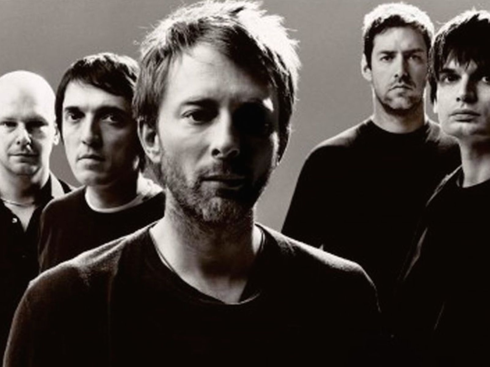
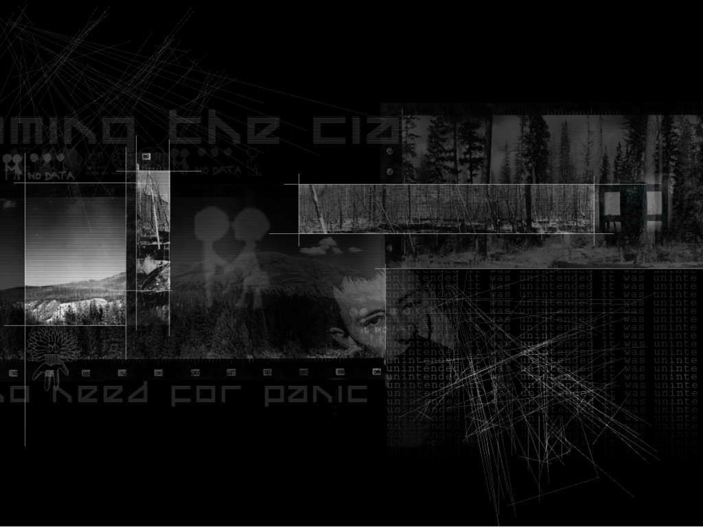
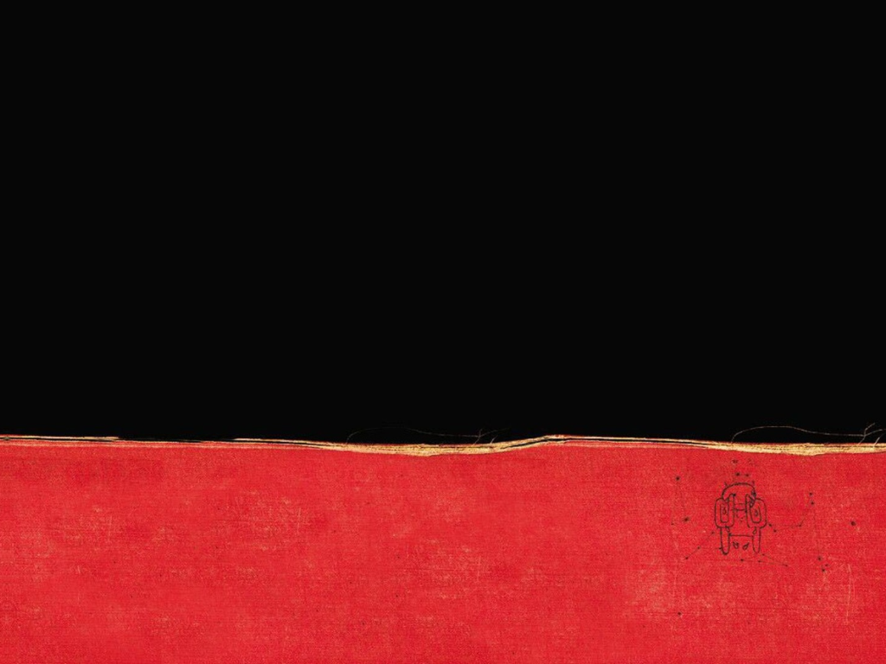

Radiohead

Radiohead es una banda británica de rock alternativo y art rock originaria de Abingdon-on-Thames, Inglaterra, formada en 1985. Está integrada por Thom Yorke (voz, guitarra, piano), Jonny Greenwood (guitarra solista, teclados, otros instrumentos), Ed O'Brien (guitarra, segunda voz), Colin Greenwood (bajo, teclados) y Phil Selway (batería, percusión).
Radiohead lanzó su primer sencillo, «Creep», en 1992. Si bien la canción fue en un comienzo un fracaso comercial, se convirtió en un éxito mundial tras el lanzamiento de su álbum debut, Pablo Honey (1993). La popularidad de Radiohead en el Reino Unido aumentó con su segundo álbum, The Bends (1995). El tercero, OK Computer (1997), con un sonido expansivo y temáticas como la alienación y la globalización, les dio fama mundial y ha sido aclamado como un disco histórico de la década de 1990 y uno de los mejores álbumes de todos los tiempos.
Han obtenido tres veces el Premio Grammy al mejor álbum de música alternativa, por OK Computer, Kid A e In Rainbows. El trabajo de la banda ha sido reconocido por los críticos en distintas listas y sondeos musicales. En 2005 se posicionaron en el puesto 73 en la lista de los 100 mejores artistas de todos los tiempos de la revista Rolling Stone. En 2009 fue nombrada la mejor banda de la década del 2000 por The Guardian. En 2010 ocuparon el puesto 29 en la lista de los 100 artistas más grandes de todos los tiempos según el canal VH1 y en 2011 se situaron en la posición número 3 de la lista de los mejores artistas británicos de la historia según Paste Magazine, solo superados por The Beatles y The Rolling Stones. En 2014 el semanario inglés NME los ubicó como los músicos más influyentes del momento. Asimismo, su actuación en Glastonbury '97 fue elegida mejor concierto de la historia en una votación de la revista Q en 2004 y mejor concierto de un festival en una encuesta de Proud Galleries en 2005. El grupo ha vendido casi 40 millones de álbumes en todo el mundo. El 29 de marzo de 2019, Radiohead ingresó en el Salón de la Fama del Rock and Roll.
Formación
Radiohead se formó a mediados de la década de 1980 en la escuela Abingdon (un colegio privado para varones) en Abingdon, Oxfordshire en Inglaterra, a la cual acudían el baterista Phil Selway, el guitarrista Ed O'Brien, el vocalista Thom Yorke, el bajista Colin Greenwood y su hermano Jonny. Yorke y Colin Greenwood estaban en el mismo curso, O'Brien y Selway eran un año mayores que ellos y Jonny Greenwood, dos años menor que su hermano.
Todos provenían de familias de clase media y empezaron a tocar en el salón de música de la escuela, tomando el nombre del único día de la semana en el que podían ensayar: On a Friday ("el viernes"). La banda realizó su primera presentación en directo en la Taberna Jericho de Oxford a finales de 1986; al principio Jonny Greenwood tocaba la armónica y el teclado, pero pronto se convirtió en el guitarrista principal.
La popularidad de la banda en la región de Oxfordshire creció hasta el punto de aparecer en la portada de Curfew, una revista local de música. La música independiente había tenido mucha repercusión en Oxfordshire y en el valle del Támesis a finales de la década de 1980, pero sólo estaba enfocada en bandas del shoegazing como Ride y Slowdrive; On a Friday no pertenecía al género.
Estilo

Desde su formación, Radiohead ha sido, lírica y musicalmente, liderada por Thom Yorke. Sin embargo, a pesar de que Yorke es el responsable de escribir casi todas las letras, la composición de las canciones es un esfuerzo colectivo, ya que se ha mencionado en varias entrevistas que todos los miembros de la banda tienen algún tipo de papel durante el proceso. Debido a esto, todas las canciones del grupo están oficialmente acreditadas a Radiohead. Las sesiones de Kid A y Amnesiac produjeron un cambio en el estilo musical de Radiohead y un cambio aún más radical en el método de trabajo de la banda.
Desde este cambio de una instrumentación de rock tradicional hacia un énfasis en el sonido electrónico, los miembros de la banda han tenido una mayor flexibilidad y ahora normalmente tocan distintos tipos de instrumentos en función de los requisitos particulares de cada canción. En Kid A y Amnesiac, Yorke tocó el teclado y el bajo, mientras que Jonny Greenwood manipuló a menudo las ondas de Martenot en lugar de la guitarra, el bajista Colin Greenwood realizó samples, y O'Brien y Selway se repartieron la caja de ritmos y la manipulación digital y además encontraron nuevas formas de incorporar sus principales instrumentos, guitarra y batería respectivamente, en el nuevo sonido.
Respecto a la influencia de Radiohead en otros músicos, los primeros álbumes de la banda fueron especialmente influyentes en el rock y la música pop británica,mientras que su trabajo posterior ha inspirado a músicos de géneros que van desde el jazz y la música clásica al hip hop, la música electrónica y el R&B. Por otro lado, algunos analistas y músicos, como miembros de Rush, Opeth, Dream Theater y Porcupine Tree, han atribuido a Radiohead la resurgencia del rock progresivo en la música popular debido a sus giros estilísticos e innovaciones.
Albums
La discografía de Radiohead, una banda de rock alternativo del Reino Unido se compone de nueve álbumes de estudio, 26 sencillos, 6 EP, un álbum en directo y un álbum recopilatorio. Radiohead está formada por Thom Yorke (voz, guitarra y piano), Jonny Greenwood (guitarra y otros instrumentos), Ed O'Brien (guitarra y coros), Colin Greenwood (bajo, sintetizadores) y Phil Selway (batería, percusión).
Los seis álbumes de estudio de la banda, publicados por EMI, habían vendido más de veinticinco millones de copias en 2007. de forma independiente Radiohead lanzó su séptimo álbum, In Rainbows (2007), originalmente como una descarga digital para que los clientes pudieran establecer su propio precio, y más tarde en forma física, vendiendo más de tres millones de copias al plazo de un año del lanzamiento.
El trabajo de Radiohead ha aparecido en un gran número de sondeos de oyentes y listas de críticos. Por ejemplo, en 2005, representando la banda, Thom Yorke fue clasificado en el número 66 en la lista de Rolling Stone de "los cien artistas más grandes de todos los tiempos".
Pablo Honey

Es el nombre del álbum debut de la banda británica de rock alternativo Radiohead. Fue lanzado al mercado por EMI, Parlophone y Capitol Records el 22 de febrero de 1993. Su gran éxito fue el sencillo "Creep". La versión estadounidense del álbum tiene una versión especial de "Creep", en la cual el fuckin pronunciado antes del coro es reemplazado por very. El tema "Creep" surgió accidentalmente ya que era una canción que Jonny Greenwood odiaba y trataba de arruinar con ruidos discordantes, así nació el acorde distorsionado, que cambia el ritmo y clima del tema. El mismo llegó al puesto 27 de la Billboard. Las versiones japonesas en cambio tienen un total de 17 pistas, siendo las nuevas: "Pop Is Dead", "Inside my Head", "Million Dollar Question" y dos versiones en directo de "Creep" y "Ripcord".
En el clima musical alternativo pesado de 1993, Pablo Honey no recibió una atención especial. Sin embargo, varios críticos estaban entusiasmados con el próximo lanzamiento debut de la banda. NME se refirió a la banda como "una de las esperanzas más brillantes del rock." En los Estados Unidos, su sencillo debut, "Creep", instó a los observadores de la industria y los aficionados a establecer paralelismos entre Radiohead y Nirvana, con algo de Radiohead incluso promocionando como el "Nirvana británico".
The Bends

Es el segundo disco de estudio de la banda británica Radiohead, publicado el 13 de marzo de 1995. Entre los sencillos que se pueden destacar se encuentran "High & Dry/Planet Telex", "Fake Plastic Trees", "Just" y "Street Spirit (Fade Out)". The Bends es considerado uno de los mejores álbumes de la década y uno de los pilares más importantes en la historia del rock alternativo.
La banda adelantó la producción con el EP My Iron Lung, cuyo propósito era desterrar la idea de que Radiohead sólo podía ser reconocido por la canción "Creep", del disco Pablo Honey. The Bends tardó en ser aceptado como una gran obra, y ha sido valorado a medida que pasan los años. Está dedicado al difunto comediante Bill Hicks y también a "Indigo".
El disco toma como título el de su segunda canción y se refiere al síndrome de descompresión, una enfermedad aguda que afecta la sangre y que se presentaba más comúnmente en buzos o pilotos de aviones de la época de la segunda guerra mundial.
OK Computer

Es el tercer álbum de estudio de la banda británica de rock alternativo Radiohead, lanzado el 21 de mayo de 1997 en Japón, el 16 de junio en Reino Unido y el 1 de julio en Estados Unidos. Fue grabado en la zona rural de Oxfordshire y Bath, durante 1996 y principios de 1997, junto al productor Nigel Godrich. Aunque en la mayoría de la música domina el sonido de guitarra, su extenso sonido y la amplia gama de influencias lo distinguen de muchas bandas populares de britpop y rock alternativo de la época, y sentó las bases para el trabajo posterior de Radiohead, más experimental. El grupo no considera a OK Computer un álbum conceptual; sin embargo, sus letras y el arte visual hacen hincapié en temas comunes, como el consumismo, la desconexión social, el estancamiento político, y el malestar posmoderno.
OK Computer ha recibido la aclamación unánime de la crítica desde su lanzamiento, y ha sido catalogado por los críticos musicales como uno de los mejores álbumes de la historia y como una obra maestra del rock moderno. De hecho, varias listas tanto de críticos como encuestas populares lo consideran el mejor de la historia, comparándose con los míticos The Dark Side of the Moon de Pink Floyd o Sgt. Pepper's Lonely Hearts Club Band y Abbey Road de The Beatles.
OK Computer alcanzó el número uno en las listas británicas de álbumes y marcó el ingreso de Radiohead en el mercado estadounidense, donde debutó en la posición número 21 del Billboard 200. El álbum amplió la popularidad de la banda en todo el mundo, y ha sido certificado triple platino en el Reino Unido, doble platino en los Estados Unidos, y platino en Australia.
Kid A

Es el cuarto álbum de estudio de la banda inglesa de rock alternativo Radiohead, lanzado en octubre de 2000. Fue un éxito comercial a nivel internacional, llegando a obtener un disco de platino una semana después de su lanzamiento en el Reino Unido. Pese a la falta de un sencillo oficial o videoclip que sirviera como publicidad, Kid A fue el primer álbum de Radiohead en debutar en el primer puesto en Estados Unidos. Su éxito pudo haberse debido a una campaña única de mercadotecnia, su previo lanzamiento por Internet, o a la expectación generada por su álbum anterior, OK Computer.
Kid A se grabó en París, Copenhague, Gloucestershire y Oxford. El proceso de composición y grabación del álbum fue experimental para Radiohead, ya que la banda cambió su sonido de antaño por otro más electrónico. Con influencias del krautrock, jazz, y la música clásica del siglo XX, Radiohead abandonó su instrumentación de tres guitarras para incorporar una mayor diversidad, empleando teclados, ondas Martenot y, en ciertas canciones, instrumentos de cuerda y de viento-metal. Kid A contiene además letras más abstractas y minimalistas que las de trabajos anteriores de la banda. El cantante Thom Yorke ha afirmado que el álbum no fue pensado como «arte», sino que refleja la música que los integrantes de la banda escuchaban en aquel momento. Acompañando al álbum se incluyeron diseños de Stanley Donwood y Yorke, junto a una serie de pequeños videoclips, llamados blips.
Kid A está considerado uno de los álbumes de música popular más desafiantes jamás grabados en tener éxito comercial, y generó opiniones polarizadas entre los seguidores y la crítica. El álbum ganó un premio Grammy al mejor álbum de música alternativa y obtuvo una nominación en la categoría de álbum del año. Además, recibió elogios por introducir a los oyentes a la música alternativa. Pese a que el nuevo rumbo que tomó la banda alejó a algunos seguidores y disgustó a algunos críticos, Kid A recibió críticas en general positivas de notables medios dedicados a la música.
Amnesiac
Es el quinto álbum de estudio de la banda de rock inglesa Radiohead, lanzado en junio de 2001 por Parlophone. Grabado con el productor Nigel Godrich durante las mismas sesiones que el anterior álbum de Radiohead, Kid A (2000), Amnesiac incorpora influencias similares de la música electrónica, la música clásica del siglo XX, el jazz y el krautrock. Solo se grabó una canción después de Kid A: "Life in a Glasshouse", una colaboración con Humphrey Lyttelton Band.
Después de no haber publicado sencillos de Kid A, Radiohead lanzó tres de Amnesiac, acompañados de videos musicales: "Pyramid Song", "Knives Out" y el sencillo de radio "I Might Be Wrong". Amnesiac debutó en el número uno en el UK Albums Chart y en el número dos en el US Billboard 200. Hasta octubre de 2008, había vendido más de 900,000 copias en todo el mundo.
Aunque decepcionó a algunos que esperaban un retorno al sonido rock anterior de Radiohead, Amnesiac fue nombrado uno de los mejores álbumes de 2001 por numerosas publicaciones. Fue nominado para el Premio Mercury y varios Premios Grammy, ganando el Mejor Paquete de Grabación para la edición especial. "Pyramid Song" fue clasificada como una de las mejores pistas de la década por Rolling Stone, NME y Pitchfork. En 2012, Rolling Stone clasificó a Amnesiac en el número 320 en su versión actualizada de Los 500 mejores álbumes de todos los tiempos.
In Rainbows

Es el séptimo álbum de estudio de la banda inglesa de rock alternativo Radiohead. Originalmente se lanzó el 10 de octubre de 2007 en formato digital y se convino que los interesados en descargarlo pagaran lo que creyeran conveniente. En segundo término, se lanzó en formato CD en muchos países durante la última semana de ese año. En Estados Unidos, se puso a la venta el 1 de enero de 2008. In Rainbows fue la primera producción tras la finalización de su contrato con EMI, rematando también la brecha más grande entre sus álbumes de estudio.
Radiohead trabajó en el álbum durante más de dos años con los productores Mark Stent y Nigel Godrich, comenzando a principios de 2005. Durante el proceso, la banda salió de gira tres meses por Europa y Estados Unidos a mediados de 2006. Las letras del disco fueron más personales que en otros trabajos de la banda. El vocalista Thom Yorke describió varios temas como sus propias versiones de «canciones de seducción». Radiohead incorporó una amplia variedad de estilos musicales e instrumentos en el álbum, no haciendo uso exclusivo de música electrónica y arreglos para instrumentos de cuerda, sino también de piano, celesta y ondas Martenot.
Tras su lanzamiento físico, In Rainbows ingresó en el primer puesto de la UK Albums Chart y del Billboard 200; hacia octubre de 2008, había vendido más de tres millones de copias a nivel mundial en diversos formatos físicos y digitales. Fue aclamado por la crítica y se lo incluyó en diversas listas de los mejores álbumes de 2007. En 2009 ganó dos premios Grammy al mejor álbum de música alternativa y al mejor paquete especial de edición limitada.